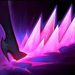

起手裝備
 增幅典籍
增幅典籍

巫妖、雷霆、帽子、虛空、寶珠與最新打野一致；爆發後以大絕退出，鞋仍依本站二升三級。


五件成裝與鞋子分開列示；起手與核心是購買路線，不是額外佔用的成裝欄位。鞋子完成時機仍依對線壓力與回城金錢調整。


死亡電刑、即刻衝擊、鎖鏈突擊、眼球收集器、絕對專注與7.3b一致，接近目標前維持血線。


閃現保留進場角度與撤退彈性，重擊維持打野必備。 本英雄以刺客／偽裝繞後／單點斬殺定位使用；7.3b不改重擊主動斬殺值，需看進化與充能。
加點優先：Q > E > W
保留Q > E > W，逐級表與7.3b打野分頁一致；大絕仍在5、9、13級，基本技能各四點。
脫離戰鬥後進入魔魅之影，低生命時持續回復；五級後額外獲得偽裝。受到英雄或防禦塔傷害時會短暫延後進入。

向前釋放兩排尖刺造成魔法傷害，可在短時間內再次施放。冷卻短，是清野、疊傷與連招中的主要輸出。
詛咒指定英雄或野怪，下一次攻擊或技能會觸發緩速；等待足夠時間後改為魅惑，對英雄降低魔防，對野怪造成額外傷害。
鞭打目標並造成依最大生命計算的魔法傷害，之後提高跑速。進入魔魅之影後會強化，將伊芙琳拉向目標並造成範圍傷害。
短暫無法被指定，對前方造成魔法傷害後向後位移；對低生命英雄傷害大幅提高，可用於斬殺、躲招或越牆撤退。
偽裝側翼先疊魅惑再爆發，巫妖與雷霆維持刺殺核心，避開敵方真視區。已核對既有技能摘要、連招操作條件及前中後期說明；沒有足夠證據改寫其餘完整技能成長數值。
2技掛印記 → 強化3技觸發魅惑 → 1技 → 普攻 → 4技斬殺
等待二技完整蓄滿後，以強化三技貼近並觸發魅惑，接一技與普攻，最後在低血斬殺線開大。
強化3技 → 1技 → 1技再施放 → 普攻 → 4技撤離
敵人缺乏位移或已殘血時不必等待魅惑，直接從偽裝中貼近爆發，避免二技警告讓目標提前撤退。
2技對野怪 → 1技觸發 → 3技 → 重擊 → 4技斬殺／撤退
二技對大型野怪有額外傷害，重擊與大絕可接近同時施放，並利用大絕後退避免被敵方集火。
五級前以穩定清野與避開強勢入侵為主，不要勉強進行缺乏控制的 Gank。二技對大型野怪能造成額外傷害，可用來加快關鍵營地與物件。
巫妖之禍 → 雷霆風暴成形後，依刺客／偽裝繞後／單點斬殺定位處理團戰與兵線；第三件接死亡之帽。後兩件按情境調整，保留主要輸出循環或承傷功能。支援前確認重擊層數、充能與物件時間，沒有線權時先交換另一側資源。
團戰前持續尋找沒有真視或隊友保護的側翼。大絕要保留到斬殺線或躲避關鍵傷害，完成輸出後利用後撤位移回到安全位置並重新進入魔魅之影。
以同頁打野威脅名單雷葛爾、菲艾、李星更新，有利名單僅是既有機制判斷，排除與威脅重複者；伊芙琳入侵仍看兩側線權、血量及關鍵技能，不當作固定單挑勝率。
對局名單是機制與分路判斷，不代表固定勝率；需同時看雙方熟練度、兵線與陣容。
留意前期入侵與視野側的進場，沒有線權時別獨自爭野。
替換以本頁五件成裝為基準；同一格建議擇一。二、三級鞋是一條升級線，換鞋時整條同步；魔劍進化不占新欄位。
高
觸發：敵方前排物防／魔防成形，或近身普攻威脅明顯。
已帶對應穿透或冰霜之心時保留，不重複購買；依實際傷害類型決定。
高
觸發：主要死亡原因是一輪集火，無法完成輸出或控制。
無限寶珠 → 中婭沙漏
敵方爆發能直接擊殺你時，以中婭沙漏取代末件；主動效果占成裝格。
敵方爆發能直接擊殺你時，以中婭沙漏取代末件；主動效果占成裝格。
高
觸發：敵方法術先手或持續魔法傷害成為主要威脅。
無限寶珠 → 女妖面紗
主要死亡原因是單次技能開戰時改女妖；護盾被消耗後仍要後退。
主要死亡原因是單次技能開戰時改女妖；護盾被消耗後仍要後退。
高
觸發：魔法傷害與控制鏈影響生存或輸出。
魔力之靴 → 水星之靴
魔法傷害及可被韌性縮短的控制占主導時，鞋線整條改水星之靴→鎖鏈軍靴。
魔法傷害及可被韌性縮短的控制占主導時，鞋線整條改水星之靴→鎖鏈軍靴。
韌性不能縮短所有控制，例如擊飛；護盾與解控各有適用條件。
高
觸發：敵人持續回復令集火失敗。
無限寶珠 → 黑魔禁書
敵方回復妨礙集火且隊友無法維持重創時，改黑魔禁書；可先用遺忘寶珠過渡。
敵方回復妨礙集火且隊友無法維持重創時，改黑魔禁書；可先用遺忘寶珠過渡。
7.3c差異核對：7.3c直接平衡項目屬符文大亂鬥；本頁保留已核對的峽谷配置。版本更新不等於每位英雄都必須更換Tier或裝備。查看整輪校正範圍。
本頁校正版本：7.3c；校正日期：2026-10-25。
參考來源標示版本：7.3c
本輪核對官方版本差異、道具/符文引用、五成裝與鞋線、逐級加點及情境替換一致性。Tier及玩法屬本站編輯判斷，不是官方排名或台服勝率；未公開的全級技能表不推算。
評級理由：7.3c 維持 A（本站判斷）。維持A；7.3b打野A，偽裝抓落單及低血斬殺強，但五級前容易被入侵。 7.3c 未改動此分路的英雄數值，沒有新證據只因版本號而升降。
Riot 官方資料 ↗ · Riot 官方資料 ↗ · Riot 官方資料 ↗ · Riot 官方資料 ↗ · Riot 官方資料 ↗ · WildRiftFire 參考攻略 ↗
7.3c 的直接英雄倍率改動屬符文大亂鬥；本召喚峽谷配置承接 7.3b。未把模式專屬增削轉為峽谷增削。
五件成裝、獨立鞋線、起手、核心、情境替換引用與一般符文列別均重新檢查；移除裝備不列入當前推薦。
歷史資料有後續調整時，以較新版本數值為準。
| 項目 | 調整前 | 調整後 |
|---|---|---|
| 基礎生命 | 600 | 630 |